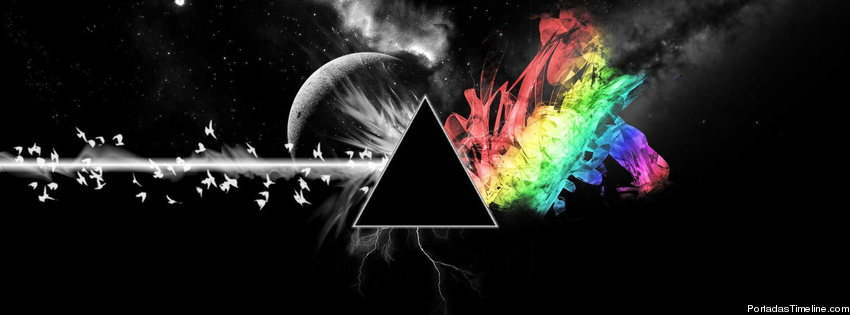
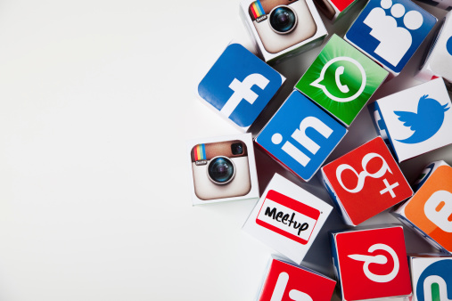

The Dark Side of the Moon, el álbum que encumbró a Pink Floyd, cumplía en 2013 su 40 aniversario. Además del apartado musical, el disco de rock progresivo se hizo famoso por su diseño, un enigmático prisma luminoso, realizado por el colectivo británico Hipgnosis con Storm Thorgerson al frente.

The Dark Side of the Moon es el octavo de estudio grabado por la banda británica de rock progresivo Pink Floyd. El 1 de marzo de 1973 fue lanzado en Estados Unidos y el 24 de marzo del mismo año en el Reino Unido. Inmediatamente se convirtió en un éxito, llegando en Estados Unidos a lo más alto de la lista Billboard 200.
La Universidad Gastón Dachary (UGD) es una universidad privada argentina que tiene su sede académica en Posadas y otra académico-administrativa en Oberá, ambas en la provincia de Misiones.
En el edificio fundacional de la Universidad se ubican oficinas administrativas, aulas, biblioteca, dos laboratorios de informática, el aula magna y el buffet. Todas las aulas están climatizadas, al igual que los laboratorios, lo que permite a los alumnos y docentes, cotar con amplios espacios para estudios y desarrollo de trabajos académicos, con tecnología actualizada acorde para el dictado de las cátedras.

Las redes sociales, en el mundo virtual, son sitios y aplicaciones que operan en niveles diversos como el profesional, de relación, entre otrospero siempre permitiendo el intercambio de información entre personas y/o empresas.
Cuando hablamos de red social, lo que viene a la mente en primer lugar son sitios como Facebook, Twitter y LinkedIn o aplicaciones como TikTok e Instagram, típicos de la actualidad. Pero la idea, sin embargo, es mucho más antigua: en la sociología, por ejemplo, el concepto de red social se utiliza para analizar interacciones entre individuos, grupos, organizaciones o hasta sociedades enteras desde el final del siglo XIX.
En Internet, las redes sociales han suscitado discusiones como la de falta de privacidad, pero también han servido como medio de convocatoria para manifestaciones públicas en protestas. Estas plataformas crearon, también, una nueva forma de relación entre empresas y clientes, abriendo caminos tanto para la interacción, como para el anuncio de productos o servicios.